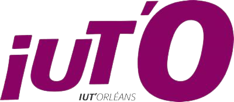
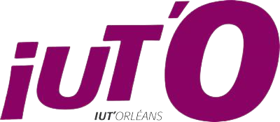

Chemin relatif

Quelles poursuites d’études après le BUT informatique?
Après votre BUT Informatique plusieurs choix s’offre à vous. Cela vous permettra de vous spécialisé et d’appendre de la manière qui vous convient le plus. Personalisez votre diplôme, découvrez le monde professionnel ou encore parcourez le monde durant votre BUT Informatique !
 
